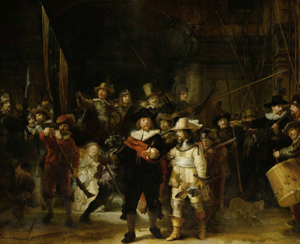
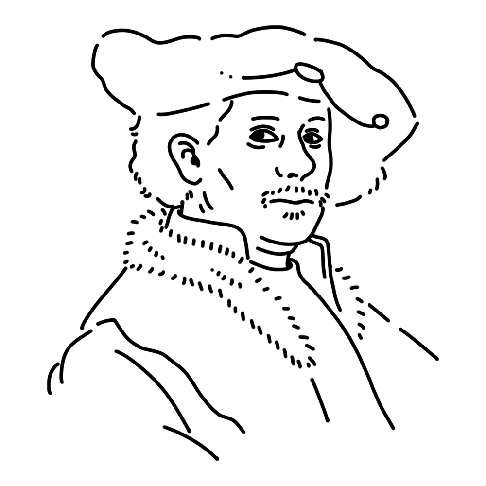

バロック時代の顔とも言える、ネーデルラント出身のミューズ。わんぱくで好奇心旺盛な少年のような性格。とにかく金目のものが大好きで、コレクションのためなら借金や破産もいとわない。
ネーデルラント連邦共和国(現オランダ)
"夜警"
"テュルプ博士の解剖学講義"
"放蕩息子の帰還" etc.

オランダの火縄銃組合の隊員たちを描いた、いわゆる「集団肖像画」。証明写真のように無機質になりがちだった当時の肖像画と異なり、今まさに出動しようとする隊員をドラマチックに描いている。元々昼の光景を描いた絵だったが表面に塗られた薬品が黒ずんでしまい、いつからか「夜警」と呼ばれるようになった。
制作年
1642年
技法・材質
油彩、カンヴァス
寸法
363 cm x 437 cm
所蔵
アムステルダム国立美術館（オランダ）

ネーデルラント連邦共和国（現・オランダ王国）が生んだ『光と影の魔術師』。明暗をたくみに操り、人物の内面までもを描き出すさまはまさしくバロックの代表選手であり、その名前は西洋美術史上に燦然と輝いている。その一方で浪費家としても知られ、早くに名声を勝ち得たにも関わらず経済的に苦しんだことも。自画像を大量に残しており、どのような風貌の人物だったかが非常にわかりやすい画家のひとりでもある。
Rembrandt Harmenszoon van Rijn
1606年7月15日
1669年10月4日(63歳没)